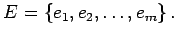
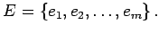

Inhalt Index DeskTop Bronstein

 Algebra und Diskrete Mathematik Algorithmen der Graphentheorie Grundbegriffe und Bezeichnungen
Algebra und Diskrete Mathematik Algorithmen der Graphentheorie Grundbegriffe und Bezeichnungen


Endliche Graphen kann man wie folgt durch eine Matrix beschreiben: Es sei G=(V,E) ein Graph mit  und  Dabei bezeichne m(vi,vj) die Anzahl der Kanten von vi nach Bei ungerichteten Graphen werden Schlingen doppelt gezählt; bei gerichteten Graphen zählt man Schlingen einfach. Die Matrix A vom Typ (n,n) mit A=(m(vi,vj)) wird Adjazenzmatrix genannt. Ist der Graph zusätzlich schlicht, dann hat die Adjazenzmatrix die folgende Gestalt:
und  Dabei bezeichne m(vi,vj) die Anzahl der Kanten von vi nach Bei ungerichteten Graphen werden Schlingen doppelt gezählt; bei gerichteten Graphen zählt man Schlingen einfach. Die Matrix A vom Typ (n,n) mit A=(m(vi,vj)) wird Adjazenzmatrix genannt. Ist der Graph zusätzlich schlicht, dann hat die Adjazenzmatrix die folgende Gestalt:
D.h. in der Matrix A steht in der i-ten Zeile und j-ten Spalte genau dann eine 1, wenn eine Kante von vi nach vj verläuft.
Für ungerichtete Graphen ist die Adjazenzmatrix symmetrisch.
| Beispiel A | ||
|
Neben der Abbildung ist die Adjazenzmatrix A(G1) des gerichteten Graphen G1 gezeigt. |
| Beispiel B | ||
|
Neben der Abbildung ist die Adjazenzmatrix A(G2) des ungerichteten schlichten Graphen G2 gezeigt.
|